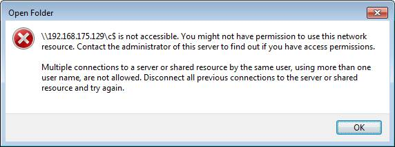

Under certain circumstances, you cannot connect to administrative shares (e.g. C$) on remote computers, even though you use the right credentials. Accessing a normal (i.e. non-administrative) share works flawlessly, though.
In this situation you get the following error when trying to connect to the admin share in Explorer:

The message hints at multiple connections, but that is misleading.
When you try to connect to the admin share on the command line, you get a different error message:
C:\> net use \\192.168.175.129\c$ /user:win7-2\admin *
Type the password for \\192.168.175.129\c$:
System error 5 has occurred.
Access is denied.
As described in MS KB article 951916, Microsoft introduced as part of UAC a little known feature called "UAC remote restrictions". It filters the access token for connections made with local user accounts or Microsoft accounts (the latter typically have the format MicrosoftAccount\EMailAddress). In other words, it removes the SID for "Administrators". Connections made with domain accounts remain unchanged.
From KB951016:
If the user wants to administer the workstation with a Security Account Manager (SAM)
account, the user must interactively log on to the computer that is to be
administered with Remote Assistance or Remote Desktop, if these services are available.
One may like this or not, the solution is luckily pretty simple. UAC remote restrictions can be disabled by setting the registry value LocalAccountTokenFilterPolicy to 1:
Key: HKEY_LOCAL_MACHINE\SOFTWARE\Microsoft\Windows\CurrentVersion\Policies\System
Value: LocalAccountTokenFilterPolicy
Data: 1 (to disable, 0 enables filtering)
Type: REG_DWORD (32-bit)
After a reboot access tokens from remote connections are not filtered any more. On Windows 8 and Windows 10 the reboot is not even required any more.